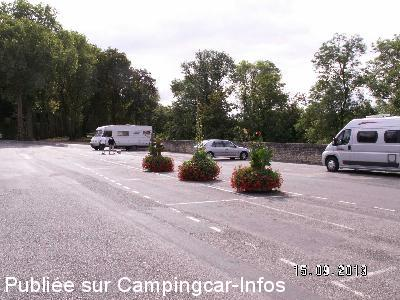
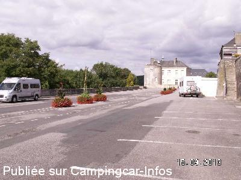
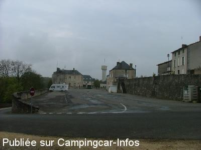
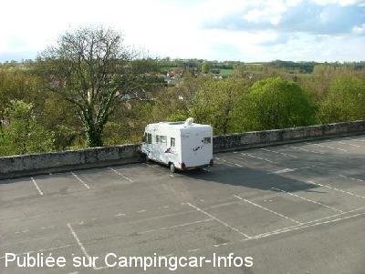
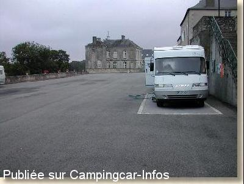

ASN = Aire de services avec stationnement nuit possible de :
COUHÉ
(N° 783)
Accès/adresse :
Rue de Bel Air
86700 COUHÉ
86700 COUHÉ
Latitude : (Nord) 46.29908° Décimaux ou 46° 17′ 56′′
Longitude : (Est) 0.17889° Décimaux ou 0° 10′ 44′′
Tarif : Gratuit
Type de borne : Artisanale
Services :


Tous commerces
Autres informations :
Borne fermée en période de gel
9 emplacements, calme avec vue magnifique sur le château.
Tél office du Tourisme +33 (0)549 592 671

Le 23/08/2014 par Gilles

Le 23/08/2014 par Gilles

Le 21/04/2009 par

Le 21/04/2009 par

Le 06/03/2003 par Pierre
de
philippedu62
le 25/08/2015 :
de passage pour une nuit sur la route des landes aout 2015
( rien a redire gratuit , eau gratuite + vidange )
tres calme , que 2 camping car se soir la
cadre tres agréable et on a vu les joueurs de pétanque
merci monsieur le maire
de passage pour une nuit sur la route des landes aout 2015
( rien a redire gratuit , eau gratuite + vidange )
tres calme , que 2 camping car se soir la
cadre tres agréable et on a vu les joueurs de pétanque
merci monsieur le maire
de
snoopz033
le 18/04/2014 :
De passage pour 1 nuit, aire extremement bruyante avec la n10 pas loin. Sinon le cadre reste agreable. Eau gratuite et acces sanitaire merci à la commune.
De passage pour 1 nuit, aire extremement bruyante avec la n10 pas loin. Sinon le cadre reste agreable. Eau gratuite et acces sanitaire merci à la commune.
de
Deneir Antoon
le 26/09/2013 :
13/09/2013
Antoon & Bea
Wij zijn reeds verschillende malen hier geweest omdat deze aire niet ver van de R.N. Angouleme - Potiers ligt.
Alle service en toiletten gratis,een beetje lawaai van de R.N. s'nachts.Zeer mmoie en grote authentieke Hallen op de markt.Wij hebben er echter geen degelijk restaurant gevonden,alleen een pizeria.
13/09/2013
Antoon & Bea
Wij zijn reeds verschillende malen hier geweest omdat deze aire niet ver van de R.N. Angouleme - Potiers ligt.
Alle service en toiletten gratis,een beetje lawaai van de R.N. s'nachts.Zeer mmoie en grote authentieke Hallen op de markt.Wij hebben er echter geen degelijk restaurant gevonden,alleen een pizeria.
de
D & D
le 30/08/2013 :
Contrairement aux dires précédents, le bruit de la circulation sur la RN 10 est à peine supportable de jour, alors la nuit !!! De plus, les emplacements pour camping car sont au nombre de 9 et non 50 comme indiqué dans le guide des aires. Elles sont étroites et
très courtes. Nous avons un camping car d'une dimension très courante. Pour une Clio, c'est bon!
Contrairement aux dires précédents, le bruit de la circulation sur la RN 10 est à peine supportable de jour, alors la nuit !!! De plus, les emplacements pour camping car sont au nombre de 9 et non 50 comme indiqué dans le guide des aires. Elles sont étroites et
très courtes. Nous avons un camping car d'une dimension très courante. Pour une Clio, c'est bon!
de
Ocral Jack
le 31/10/2011 :
29/10/2011
Nous y avons passés la nuit, endroit calme, agréable. Seul bémol il n'y a qu'un seul robinet d'eau.....
Rien a rajouter de plus.
29/10/2011
Nous y avons passés la nuit, endroit calme, agréable. Seul bémol il n'y a qu'un seul robinet d'eau.....
Rien a rajouter de plus.
de
bronxiol
le 19/08/2009 :
Sur une place en dehors de l'axe principal. Vous trouverez des joueurs de pétanque le mardi et le jeudi si vous aimez les boules, faites comme moi, j'ai joué avec eux un après midi. Et donnez leur le bonjour de Bruno du 44
Sur une place en dehors de l'axe principal. Vous trouverez des joueurs de pétanque le mardi et le jeudi si vous aimez les boules, faites comme moi, j'ai joué avec eux un après midi. Et donnez leur le bonjour de Bruno du 44
de
dan
le 06/03/2009 :
Très bien. Ville sympa. Services gratuits.
Très bien. Ville sympa. Services gratuits.
de
Michèle Goutard
le 15/06/2008 :
Passée deux fois sur cette aire en mai, je confirme qu'elle est très agréable, bien située près de cette magnifique Halle du 16ème siècle. Faire également le circuit de visite fléché, très plaisant. Il y a une belle vue, les commerces sont tout proches et très accueillants. Merci à la municipalité de Couhé.
Passée deux fois sur cette aire en mai, je confirme qu'elle est très agréable, bien située près de cette magnifique Halle du 16ème siècle. Faire également le circuit de visite fléché, très plaisant. Il y a une belle vue, les commerces sont tout proches et très accueillants. Merci à la municipalité de Couhé.
de
Le Ouiddou
le 17/03/2007 :
Très belle aire, bien placée dans la ville, tranquille, mais on entend bien la voie rapide, pas loin, la nuit. Cela reste très supportable et sympa.
Très belle aire, bien placée dans la ville, tranquille, mais on entend bien la voie rapide, pas loin, la nuit. Cela reste très supportable et sympa.